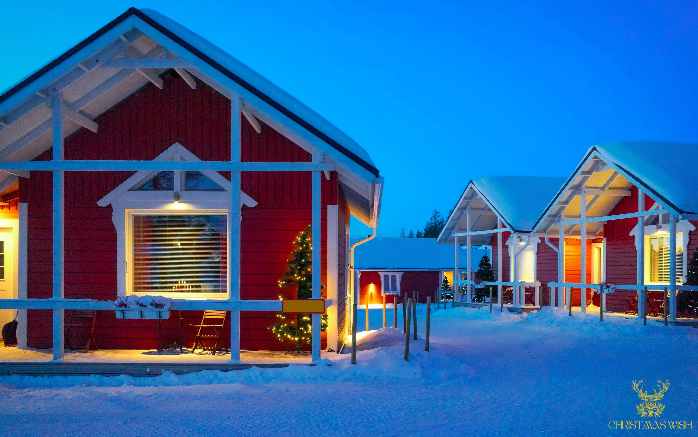
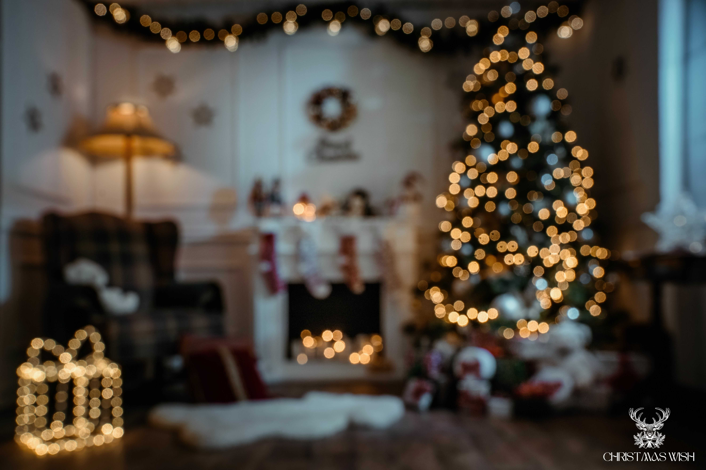
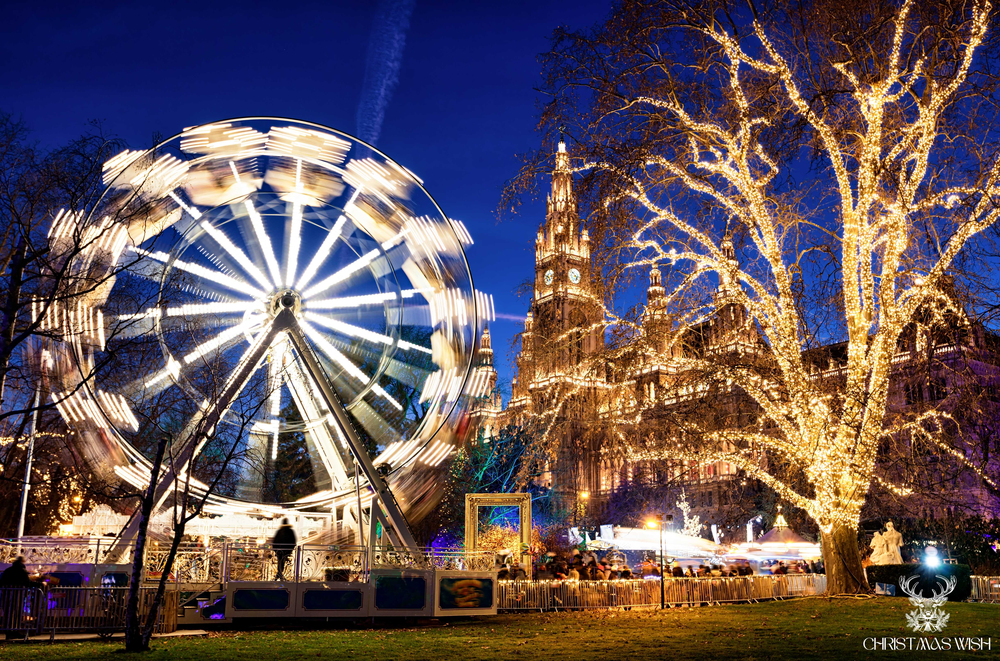
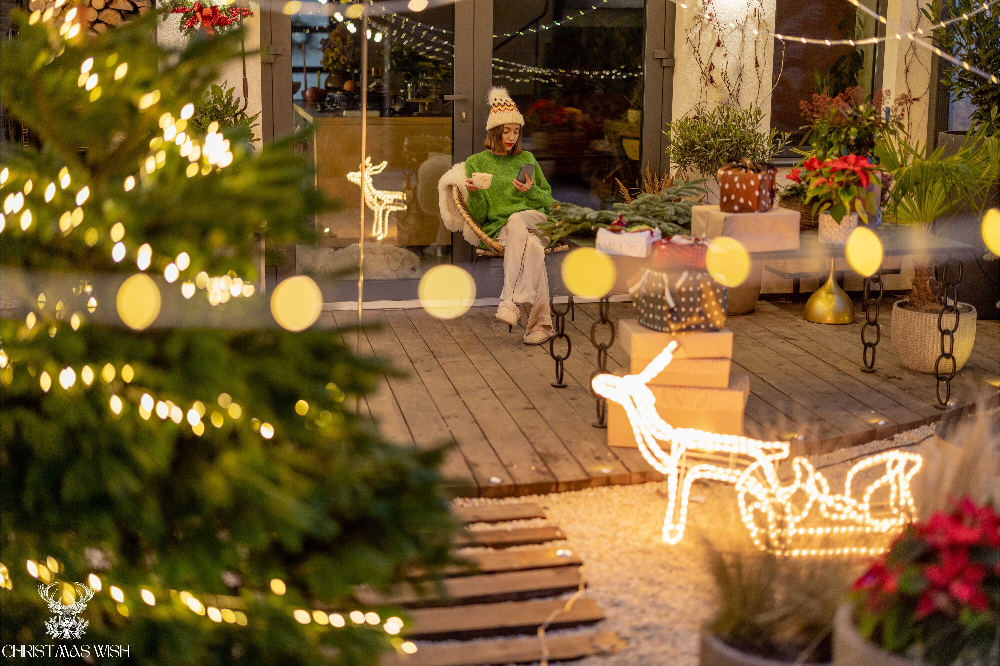
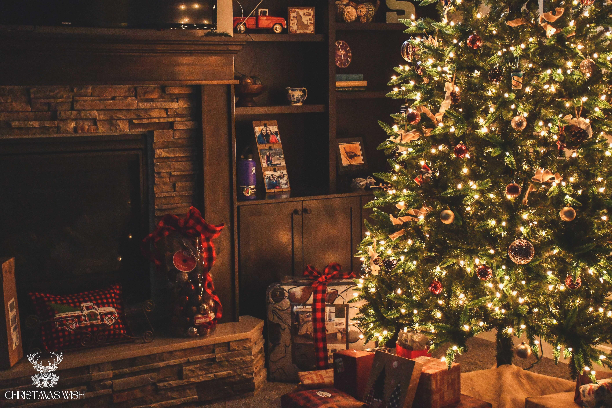
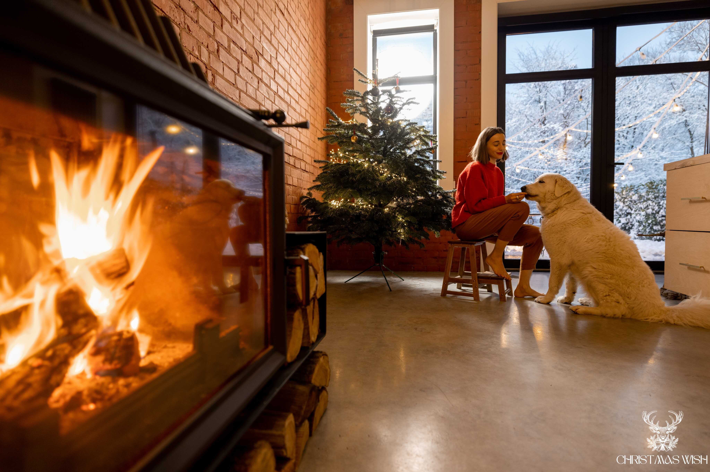

Christmas Wish je projekt iz ljubavi — stranica, Facebook zajednica i YouTube kanal posvećeni zimskoj atmosferi, božićnom ugođaju i svemu što dolazi s prvim pahuljama. Bez žurbe, bez buke. Samo onaj poseban osjećaj koji svi prepoznajemo.



Svi zabilježeni trenuci zimske čarolije na jednom mjestu.



Priče, razmišljanja i uspomene o Božiću, zimi i svemu što dolazi s prvim pahuljama.